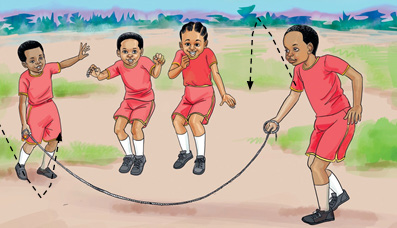

Activity 13
Skip rope with one leg.
Skippping in groups
This game is played by four or more people.
The game is played in turns.

How to skip in pairs or groups
1.
Have two rope holders.
2.
One holds one end of the rope, and another holds the other.
3.
The rope holders start swinging the rope.
4.
Those standing start jumping over the rope while singing.
5.
Players who touch the rope will switch over with the rope holders.